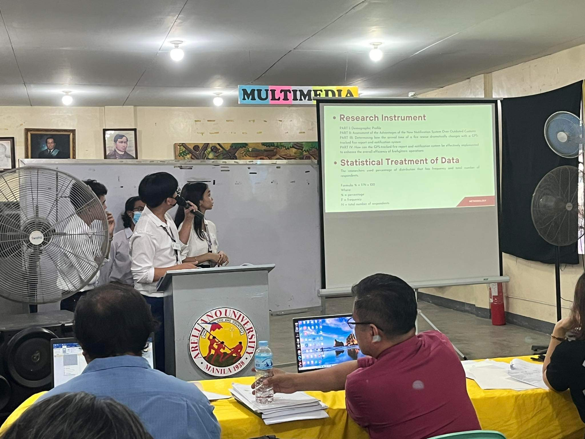
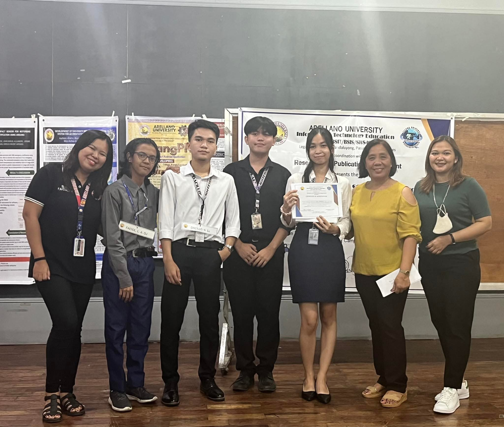

2023 - Present
BS Information Technology - Pamantasan ng Lungsod ng Valenzuela
Currently building stronger foundations in system development, UI/UX design, and creative technology while preparing for real-world IT work.
John Benidict Misal is a 20-year-old incoming 4th year BSIT student at Pamantasan ng Lungsod ng Valenzuela. His journey into the world of technology began at just 10 years old, sparked by the inspiration of his uncle’s work with PCs. By 12, he had already discovered a passion for video editing, which soon blossomed into expertise in UI design, system development, and creative media. He continues to push the boundaries of innovation, blending technology with artistry to bring ideas to life.
➔ Download CVEducation
A learning path shaped by technology, creativity, and continuous growth.
2023 - Present
BS Information Technology - Pamantasan ng Lungsod ng Valenzuela
Currently building stronger foundations in system development, UI/UX design, and creative technology while preparing for real-world IT work.
2021 - 2023
ICT Strand - Arellano University, Malabon
Developed an interest in interface design, multimedia, and programming. Graduated with high honors and ranked first in my section.
2017 - 2021
High School - Wawang Pulo National High School
Explored computer applications, basic programming, and creative media through school activities and early technology experiences.
2011 - 2017
Elementary - Wawang Pulo Elementary School
This is where my dream of becoming an IT professional first started, giving me a clear direction at an early age.
Interests & Skills
Creative abilities shaped by design thinking, technical practice, and visual storytelling.

Creating clean layouts, user flows, and interfaces that make digital experiences easier to use.

Building logic, structure, and interactive web projects through continuous IT practice.

Editing stories with rhythm, pacing, transitions, and a strong sense of mood.

Studying game menus, HUDs, and interaction patterns to improve visual interface decisions.

Exploring cinematic effects, visual composition, and how motion enhances storytelling.

Planning, directing, and shaping scenes into meaningful visual stories.

Guiding visuals, shots, and creative choices to communicate a clear message.

Designing responsive pages with visual balance, structure, and a polished user experience.
Gallery
A collection of snapshots that reflect my identity, experiences, and the moments that shape my story.

